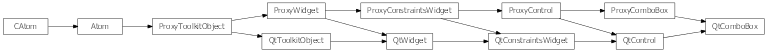
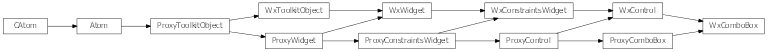

Bases: enaml.widgets.control.Control
A drop-down list from which one item can be selected at a time.
Use a combo box to select a single item from a collection of items.
The unicode strings to display in the combo box.
The integer index of the currently selected item. If the given index falls outside of the range of items, the item will be deselected.
Whether the text in the combo box can be edited by the user.
A combo box hugs its width weakly by default.
A reference to the ProxyComboBox object.

Bases: enaml.qt.qt_control.QtControl, enaml.widgets.combo_box.ProxyComboBox
A Qt implementation of an Enaml ComboBox.
A reference to the widget created by the proxy.

Bases: enaml.wx.wx_control.WxControl, enaml.widgets.combo_box.ProxyComboBox
A Wx implementation of an Enaml ProxyComboBox.
A reference to the widget created by the proxy.